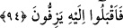
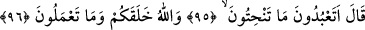
parça yerlere atılmış bir halde olduğunu gördüler. Bunu kimin yapmış olabileceğini
sordular. Nihâyet İbrahim (a.s.)’ın yapmış olduğuna kanaat getirdiler ve onun
getirilmesini istediler.
94. (Putperestler) koşarak İbrahim’e geldiler.
İbrahim (a.s.)’ı yakalayıp getirmekle memur olanlar “koşarak İbrahim’e geldiler.”
İbn Şeyh der ki, buradaki “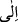 harfi cerrinin hem öncesine yani “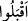 fiiline ve hem
de sonrasına yani “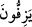 fiiline taalluk etmesi mümkündür. Âyette “koşarak” anlamı
verilen “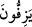 fiili, “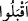 fiilindeki vav’dan haldir. Yâni, “koşarak geldiler” demektir. “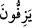 fiili deve kuşlarının koşmaya başlama hallerini ifade eden bir kelimedir.
el-Müfredât’ta der ki: “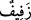 kelimesi aslında rüzgarın esmesinde ve yürümekle
uçmak karışımı bir durumda deve kuşunun hızlıca yürümesinde kullanılmaktadır. Deve
kuşları hızlıca yürüdüklerinde “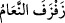 denilir.
“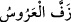 ifadesi de gelini bezeyip zifaf için güvey evine götürmek mânâsında
mecaz olarak kullanılmıştır. Burada işin hızlı oluşunda bir mecazlık vardır. Yoksa
gelinin normal yürüyüşünde bir hızlılık yoktur. Burada gelinin mutluluktan dolayı gayet
kolay, hafif ve hızlıca sanki sevinç ve mutluluktan uçuyor gibi gitmesi mânâsında bir
benzerlik söz konusudur.
95, 96. İbrahim: Yonttuğunuz şeylere mi ibadet edersiniz! Oysa ki sizi ve
yapmakta olduklarınızı Allah yarattı, dedi.
İbrahim (a.s.) huzura getirildikten sonra onunla putperestler arasında bir konuşma
geçti. Allah Teâlâ bu konuşmayı Enbiya suresinde şu şekilde hikaye eder: İbrahim
(a.s.)’e: “Bunu ilâhlarımıza sen mi yaptın ey İbrahim? dediler. Belki de bu işi şu
büyükleri yapmıştır. Hadi onlara sorun; eğer konuşuyorlarsa! dedi. Bunun üzerine,
kendi vicdanlarına dönüp (kendi kendilerine) «Zâlimler sizlersiniz, sizler!» dediler.
Sonra tekrar eski inanç ve tartışmalarına döndüler: Sen bunların konuşmadığını
pek âlâ biliyorsun, dediler.” (el-Enbiya 21/62-65).
İbrahim (a.s.): “Yonttuğunuz şeylere mi” yani yonttuğunuz putlara mı “ibadet
edersiniz!” dedi. “ kelimesi ağaç, ahşap ve benzeri cisimleri yontmayı ifade eder.